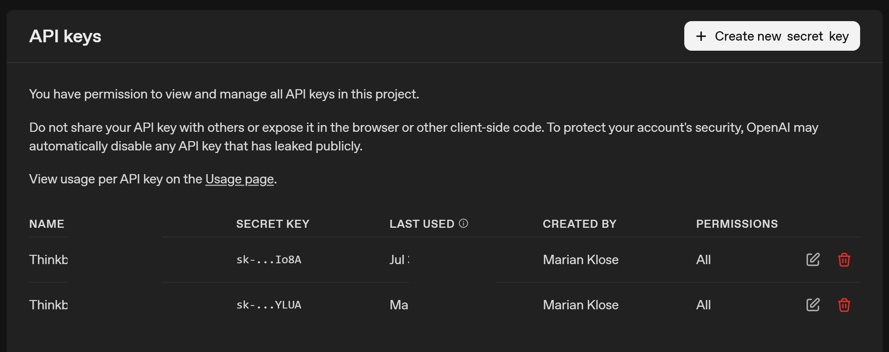

![]()
powershell
setx OPENAI_API_KEY "your_api_key_here"Large language models (LLMs) are sneaking more and more into our daily workflows. There is surely a debate whether they deserve the hype, but in general they seem to be quite useful for low-risk but repetitive tasks that tend to eat up our time and focus. While we can use the graphical user interface to run these models, a more effective and much more powerful way is to run them directly from the command line using R or Python. By doing so we can supercharge their usefulness and create tailored, automated solutions for our specific solutions without the pain of clicking through a web interface. I have recently digged a bit into this topic and I am surely still scratching the surface of what is possible. In this post, I’ll simply walk through my first steps using ChatGPT from the command line in Python, and highlight a few features/funcitons that I found helpful. In the end, we will have a very simplistic agentic workflow that is able to extract structured information from some NONMEM model code. Sounds good? Let’s get started!
OpenAI provides official Software Development Kits (SDKs) for interacting with their API in several programming languages, such as JavaScript and Python. These SDKs make sending requests and processing responses relatively painless and have the official support of OpenAI. While Python is not super popular in our pharmacometric community and also I am personally much more more comfortable in R, I chose Python for these kind of tasks. The existence of a well-maintained, well-documented and ready-to-use SDK simply makes our lives much easier. You can interact with their API directly via raw HTTP requests, but I guess that is just painful and comes with a lot of overhead.

For those wanting to stick to R, there’s also the promising ellmer package which has been recently released. It integrates LLM access directly into the tidyverse ecosystem (which we all love). I haven’t tried it out yet, but it could become a very attractive option for R users. Currently they are in version 0.3.0 and I guess there is still a lot of development happening, but with the support of Posit and the tidyverse development team it will surely be a great option in the future! Feel free to comment if you have gathered some experience.
Let’s start with the essentials. For the setup, we’ll essentially follow OpenAI’s official Quickstart guide for developers.
Because the documentation may change over time, I guess referring directly to that guide is more robust than relying on any hard-coded details I would include here. Luckily their documentation is great and I found it quite easy to get started.
If we want to access ChatGPT from the command line, we first need an OpenAI account. We can simply head to the OpenAI platform and create an account. So far, creating an account is free. However, once we start sending prompts via our API key, usage will be billed. For our use-cases this will just be a couple of cents, and you can always check the expected billing in your dashboard.
If we want to use ChatGPT from the command line, we will have to authenticate ourselves so that OpenAI knows whom to bill. An API key is a long, random string used to authenticate and authorize access to the API. Think of it like a password (and handle it with the same care to avoid excessive bills from some stranger). Since every prompt we send incurs a (usually small) cost, we don’t want to share our API keys with anyone. Once we’ve successfully created the account, we can now generate an API key at this page of the dashboard.

From the screenshot, you can see that I have an API key for my laptop starting with sk-....YLUA. Now we have to make it accessible to Python, so we can authenticate ourselves when making requests.
We want to avoid typing the API key each time or hard-coding it into a script. Hard-coding it would be like pasting a password in plain text or putting it on a post-it somewhere. A much safer approach is to store the API key as an environment variable (and there are even safer options). On Windows, we can do this by searching for System environment variables in the Windows search bar or we simply use PowerShell to set it:
powershell
setx OPENAI_API_KEY "your_api_key_here"We have to make sure to name the environment variable exactly OPENAI_API_KEY. The openai Python package looks for this specific name when we initialize it to link the prompts to our account. Very nice, our API key is ready to be used!
I won’t go into the details of installing Python itself, as there are many excellent tutorials out there for that. Of course we have to take care of some packages and dependencies, and we install it with Python’s package installer pip:
powershell
pip install openaiAnd that’s it! We’ve now installed the OpenAI package and set up our API key as an environment variable. Next, we can move on to sending our first prompt.
Sending a request to ChatGPT from the command line is surprisingly straightforward. Let’s walk through it step by step. First, we load our packages and initialize the OpenAI client:
python
# load packages
from openai import OpenAI
import json
# initialize openai client
client = OpenAI()By initializing the client by calling OpenAI(), Python will look for the OPENAI_API_KEY environmental variable and get the client started. Now we can already send our first prompt. Here, we’ll use the gpt-4o model, but many other models are available.
Notably, we’ll use the Responses API, which is newer than the Chat Completions API. OpenAI has stated that Chat Completions will remain supported, but future features will likely appear first in the Responses API. The general idea is the same, though the syntax differs slightly.
python
# send request
response = client.responses.create(
model="gpt-4o",
input="Write a short joke about pharmacokinetics."
)Notice that we’re providing input only as a single text string here. This mirrors what we often do in the graphical user interface. In more advanced use cases, we can also define multiple roles:
This gives us more control and consistency when building automated workflows. We will come back alter to define the system or developer instructions to get more fine-tuned control over the model responses.
Let’s have a look at what the returned object contains:
python
# print full object
print(response)Response(id='resp_02c4bc042c3e5d2b00694b2fd4b508819c8a6a3acc743239f5', created_at=1766535124.0, error=None, incomplete_details=None, instructions=None, metadata={}, model='gpt-4o-2024-08-06', object='response', output=[ResponseOutputMessage(id='msg_02c4bc042c3e5d2b00694b2fd5401c819cb64ee377f3da5f22', content=[ResponseOutputText(annotations=[], text="Why did the molecule break up with the drug?\n\nIt couldn't handle its rate of absorption!", type='output_text', logprobs=[])], role='assistant', status='completed', type='message')], parallel_tool_calls=True, temperature=1.0, tool_choice='auto', tools=[], top_p=1.0, background=False, conversation=None, max_output_tokens=None, max_tool_calls=None, previous_response_id=None, prompt=None, prompt_cache_key=None, prompt_cache_retention=None, reasoning=Reasoning(effort=None, generate_summary=None, summary=None), safety_identifier=None, service_tier='default', status='completed', text=ResponseTextConfig(format=ResponseFormatText(type='text'), verbosity='medium'), top_logprobs=0, truncation='disabled', usage=ResponseUsage(input_tokens=17, input_tokens_details=InputTokensDetails(cached_tokens=0), output_tokens=19, output_tokens_details=OutputTokensDetails(reasoning_tokens=0), total_tokens=36), user=None, billing={'payer': 'developer'}, completed_at=1766535125, store=True)The full object contains a lot of metadata, but in most cases we only care about the generated text. We can retrieve it like this:
python
# print object
print(response.output_text)Why did the molecule break up with the drug?
It couldn't handle its rate of absorption!And there we have it, our first command-line prompt completed and we received a bad joke about pharmacokinetics. Sure, it’s just a joke for now, but the real power will reveal itself soon (hopefully). Next, we’ll look at slightly more advanced features that allow us to make ChatGPT far more useful in our day-to-day workflows.
One of the advantages of the command-line setup over the web interface is the ability to give developer-level instructions. We can pass these via the instructions parameter in client.responses.create().
According to the documentation, these instructions tell the model how to behave while generating a response, such as tone, goals, formatting, or examples of correct responses. Importantly, they have higher priority than anything written in the input prompt.
These instructions are a major part of prompt engineering, a field that ist quite important to get the expected answers from these models. It gives us much more control over the model’s behavior, especially when we are designing agent-based workflows (see later on) where each “agent” plays a defined and specialized role.
Let’s take a very simple example where we tell the model to explain concepts in short, easy-to-understand sentences. This is in contrast to the often lengthy sentences with which ChatGPT often responds to our requests:
python
# send request
response = client.responses.create(
model="gpt-4o",
instructions="You are an experienced teacher who explains concepts in multiple, short sentences with a maximum of 10 words per sentence and simple, easy-to-understand language.",
input="Explain the role of shrinkage in pharmacometric NLME models."
)
# show answer
response.output_text‘Shrinkage assesses the accuracy of parameter estimates. NLME models, it estimates how data affects parameter variability. shrinkage indicates limited data influence on random effects. shrinkage suggests more reliable random effect estimates. helps interpret model reliability and predictions. guides model improvement and helps refine data collection.’
Would I want every explanation in my life phrased like this? Probably not. I just want to make a point here: custom instructions let us shape the output style in a way that is most useful to our actual use-case.
Another, even more powerful API feauture (if you ask me) is structured outputs.

As you are probably aware, ChatGPT typically returns free-form text. That’s fine for many tasks but messy for automation or whenever you want to properly postprocess the output of an answer. Structured outputs let us force the model to return data in a predictable format (for example, a numeric value, a JSON object, or a list of parameters). The documentation for structured outputs currently lives here, feel free to check it out.
Under the hood, this works via the Pydantic library (for data validation and parsing). We simply define Pydantic classes that describe the output format, then pass this expected output structure to the API call. The model will then return data in exactly that format, allowing us to do any kind of postprocessing. First, we will have to install Pydantic:
powershell
pip install pydanticThen we load the package into our session:
python
# load packages
from pydantic import BaseModel, FieldAnd now we are able to define the type with which ChatGPT will answer our prompt. For now, we define only a single field in our NumericAnswer class, which is the value. By setting its type to float, ChatGPT will be constrained to return a numeric value such as 1.643 instead of a text-based response.
python
# define class
class NumericAnswer(BaseModel):
value: floatWe can now pass this NumericAnswer class to ChatGPT, but this time we use client.responses.parse() which is designed to handle such structured output cases.
python
# prompt chatgpt
response = client.responses.parse(
model="gpt-4o",
input="What is 14 minus 2?",
text_format=NumericAnswer,
)
# show answer
response.output_parsedNumericAnswer(value=12.0)We receive an instance of our pre-defined NumericAnswer class as output, which already contains the answer from ChatGPT. In this case it is 12.0. This value can be accessed directly using the predefined value key that was specified when the class was created. As confirmed by the type() function, the content is stored as a float, making further postprocessing straightforward.
python
# show value
response.output_parsed.value12.0python
# show type
type(response.output_parsed.value)<class 'float'>This is great, isn’t it? Let’s convert our knowledge into a simple example that is closer to our pharmacometric community.
Let’s say we want to automatically extract parameter names and their initial values from a NONMEM model file. In case you are doing a systematic review of published NONMEM models, you might find a utility like this helpful. Here is our example NONMEM model code, which is taken from pkpd-info:
python
# define model
model_text = """
;; 1. Based on: 001
;; 2. Description: drug
;; x1. Author: www.pkpd-info.com
$PROBLEM PK model
$INPUT ;; Pas aan naar dataset
CENSOR AORTA=DROP ID DATE=DROP TIME AMT EVID MDV TAD DV
$DATA datafile.CSV IGNORE=C
$SUBROUTINES
ADVAN3 TRANS4 ;; data 2-comp (iv)
$PK
LTVCL = LOG(THETA(3))
MU_1 = LTVCL ;; MU_1 referencing
CL = EXP(MU_1 + ETA(1))
LTVV1 = LOG(THETA(4))
MU_2 = LTVV1
V1 = EXP(MU_2 + ETA(2))
Q = THETA(5)
V2 = THETA(6)
S1 = V1
$THETA ;; set realistic initial estimates
(0, 0.5) ;1 prop
(0, 0.1) ;2 add
(0, 30) ;3 CL
(0, 200) ;4 V1
(0, 30) ;5 Q
(0, 200) ;6 V2
$OMEGA BLOCK(2)
0.09 ; IIV-CL
0.01 0.09 ; IIV-V
$SIGMA
1 FIX ;residual variability
$ERROR ;; Based on linear data and proportional and additive error
IPRED = F
IRES = DV-IPRED
W = IPRED*THETA(1)+THETA(2)
IF (W.EQ.0) W = 1
IWRES = IRES/W
Y= IPRED+W*ERR(1)
$EST METHOD=1 MAXEVAL=99999 SIG=3 PRINT=5 NOABORT POSTHOC INTERACTION ;; Estimation method FOCE+interaction
$COV PRINT=E UNCONDITIONAL
$TABLE ID TAD IPRED IWRES CWRES EVID MDV TIME NOPRINT ONEHEADER FILE=SDTAB001
$TABLE ID CL V1 Q V2 ETA1 ETA2 NOPRINT ONEHEADER FILE=PATAB001
$TABLE ID NOPRINT ONEHEADER FILE=COTAB001
$TABLE ID NOPRINT ONEHEADER FILE=CATAB001
"""We now want ChatGPT to
$THETA entriesand report all this in a structured format. First, we define a Pydantic class for a single parameter:
python
# define class per parameter
class OneParameter(BaseModel):
name: str = Field(..., description="The name of the parameter excluding any strings, typically provided as a comment next to the initial value.")
initial_value: floatAs you can see, within the freshly defined OneParameter object, the name of the parameter has to be a string and the initial value has to be of type float. Mixing types within one class is not a problem, and having multiple key-value pairs is also possible. But more to that later.
Please note that we can provide custom descriptions to the field by using the str = Field() notation. This adds some custom instructions in defining what we expect for this field, and helps to get the correct output for this class.
But we are not done yet. There are multiple parameters in the model code, and we want to extract them all. Currently we would simply get one of the parameters. But as we do not want to hard-code the number of expected parameters, this is a task that should be handled by the LLM.
Luckily, we can simply define a list within a nested class, to indicate that there might be multiple elements. The number of elements will be determined by ChatGPT.
python
# define class per parameter
class MultipleParameters(BaseModel):
parameter_list: list[OneParameter]Very convenient! We simply define a new class, which will be our output class, and expect it to contain a list of OneParameter objects. We do not have to define the length of this list, so depending on the model code we paste as input, the list will hopefully be filled accordingly.
Now we just need to create our response. Let’s see if this works properly. It is worth noting that we also provide some instructions via the instructions argument to clarify that we are interested only in $THETA and to give a bit of context. The predefined model_text will be passed, without further instructions or text, via the input argument. The previously defined MultipleParameters class, which expects a list of OneParameter classes, will be our text_format.
python
# prompt chatgpt
response = client.responses.parse(
model="gpt-4o",
input=model_text,
instructions="You are a helpful assistant that reliably extracts the $THETA parameters, specifially the names and the initial values from NONMEM model code",
text_format=MultipleParameters,
)
# show answer
response.output_parsedMultipleParameters(parameter_list=[OneParameter(name='prop', initial_value=0.5), OneParameter(name='add', initial_value=0.1), OneParameter(name='CL', initial_value=30.0), OneParameter(name='V1', initial_value=200.0), OneParameter(name='Q', initial_value=30.0), OneParameter(name='V2', initial_value=200.0)])This is very useful because we have provided messy and unstructured NONMEM code, and with a bit of explanation and a defined output structure, we can quickly extract useful information from the code that enables structured postprocessing. We can now also directly access the values of a particular element:
python
# show name
response.output_parsed.parameter_list[1].name'add'python
# show value
response.output_parsed.parameter_list[1].initial_value0.1We can use the response object to create a simple table that summarizes the name and the intial value, making it a bit more accessible:
python
# load pandas
import pandas as pd
# define dataframe based on response
df = pd.DataFrame([
{"name": p.name, "initial": p.initial_value}
for p in response.output_parsed.parameter_list
])
# show df
df name initial
0 prop 0.5
1 add 0.1
2 CL 30.0
3 V1 200.0
4 Q 30.0
5 V2 200.0Great! This is definitely handy. But please be aware that - as with any other use of LLMs - we cannot be fully certain that it will work perfectly every time. Hallucinations and errors can occur, so we should never rely on such operations without performing sanity checks. Still, it is easy to see how such a tool can be helpful when systematically extracting data from unstructured text.
There is much more to learn and explore, and the landscape is changing almost daily. Probably the most exciting thing (to me) are agentic workflows, which are worth a closer look.

Agents can be thought of as model-based units designed to be best at a specific, pre-defined task. They operate based on the above-mentioned custom instructions, structured output formats, and a defined model version (like gpt-4o). Here we can combine all our tools and knowledge.
An important feature of agents is the ability to define so-called handovers. This allows one agent to decide on its own to delegate a task to another agent that is better suited for it. This can be extremely powerful!
By using this approach, we can create a capable network of agents that is able to handle complex tasks. With handovers in place, a single, higher-level triage agent can direct requests to the appropriate expert agent and collect their answers.
To illustrate this, let’s replicate the earlier example, but this time using an simple agent network. For this, we first need to install the OpenAI Agents SDK library, which was made to deal with such agents more conveniently.
powershell
# load pandas
pip install openai-agentsOnce this was successful, we can again load some agent-specific modules:
python
# load pandas
from agents import Agent, RunnerIn a next step, we can create an agent that simply mirrors the behavior of our model example above:
python
# define agent
theta_agent = Agent(
name="Theta Extraction Agent",
model="gpt-4o",
instructions="You are a helpful assistant that reliably extracts the $THETA parameters, specifially the names and the initial values from NONMEM model code",
output_type=MultipleParameters,
handoff_description="Specialist agent that extracts $THETA parameters with their names and initial values"
)Please note that the setup and arguments are quite similar, but we now define it using Agent() instead of client.responses.parse(), and text_format is replaced by output_type. One key difference is the handoff_description argument, which will become important later. This description provides additional context so that the triage agent (responsible for delegating tasks) can select the appropriate expert agent to handle the request. Another difference is the absence of the input=model_text argument, as we are now defining the agent with custom instructions and output format while keeping it agnostic to specific prompts. The input prompt will only be provided when we actually run the agent, which is what we will do next.
python
# run the agent with the model code
result_theta = Runner.run_sync(theta_agent, f"Please extract the parameters from this model: {model_text}")
# show output
result_thetaRunResult(input='Please extract the parameters from this model: \n;; 1. Based on: 001\n;; 2. Description: drug\n;; x1. Author: www.pkpd-info.com\n\n$PROBLEM PK model\n\n$INPUT \t;; Pas aan naar dataset\n CENSOR AORTA=DROP ID DATE=DROP TIME AMT EVID MDV TAD DV\t\t \n\n$DATA datafile.CSV IGNORE=C \n\n$SUBROUTINES \n ADVAN3 TRANS4 \t\t;; data 2-comp (iv)\n\n$PK \t\t\t\t\n LTVCL = LOG(THETA(3))\n MU_1 = LTVCL \t\t\t;; MU_1 referencing \n CL = EXP(MU_1 + ETA(1))\n \n LTVV1 = LOG(THETA(4))\n MU_2 = LTVV1\n V1 = EXP(MU_2 + ETA(2))\n \n Q = THETA(5)\n V2 = THETA(6)\n \n S1 = V1\n\n$THETA \t\t\t;; set realistic initial estimates\n (0, 0.5) \t;1 prop\n (0, 0.1) \t;2 add\n (0, 30) \t;3 CL\n (0, 200) \t;4 V1\n (0, 30) \t;5 Q\n (0, 200) \t;6 V2\n\n$OMEGA BLOCK(2)\n 0.09\t\t; IIV-CL\n 0.01 0.09\t; IIV-V\n\n$SIGMA\n 1 FIX ;residual variability\n\n$ERROR \t\t\t;; Based on linear data and proportional and additive error\n IPRED = F\n IRES = DV-IPRED\n W = IPRED*THETA(1)+THETA(2)\n IF (W.EQ.0) W = 1\n IWRES = IRES/W\n Y= IPRED+W*ERR(1)\n\n$EST METHOD=1 MAXEVAL=99999 SIG=3 PRINT=5 NOABORT POSTHOC INTERACTION \t;; Estimation method FOCE+interaction\n\n$COV PRINT=E UNCONDITIONAL\n\n$TABLE ID TAD IPRED IWRES CWRES EVID MDV TIME NOPRINT ONEHEADER FILE=SDTAB001\n$TABLE ID CL V1 Q V2 ETA1 ETA2 NOPRINT ONEHEADER FILE=PATAB001\n$TABLE ID NOPRINT ONEHEADER FILE=COTAB001\n$TABLE ID NOPRINT ONEHEADER FILE=CATAB001\n', new_items=[MessageOutputItem(agent=Agent(name='Theta Extraction Agent', handoff_description='Specialist agent that extracts $THETA parameters with their names and initial values', tools=[], mcp_servers=[], mcp_config={}, instructions='You are a helpful assistant that reliably extracts the $THETA parameters, specifially the names and the initial values from NONMEM model code', prompt=None, handoffs=[], model='gpt-4o', model_settings=ModelSettings(temperature=None, top_p=None, frequency_penalty=None, presence_penalty=None, tool_choice=None, parallel_tool_calls=None, truncation=None, max_tokens=None, reasoning=None, verbosity=None, metadata=None, store=None, prompt_cache_retention=None, include_usage=None, response_include=None, top_logprobs=None, extra_query=None, extra_body=None, extra_headers=None, extra_args=None), input_guardrails=[], output_guardrails=[], output_type=<class '__main__.MultipleParameters'>, hooks=None, tool_use_behavior='run_llm_again', reset_tool_choice=True), raw_item=ResponseOutputMessage(id='msg_01aa6f38b96c4f5900694b2fe4e8588195b67c658bab4e489d', content=[ResponseOutputText(annotations=[], text='{"parameter_list":[{"name":"prop","initial_value":0.5},{"name":"add","initial_value":0.1},{"name":"CL","initial_value":30},{"name":"V1","initial_value":200},{"name":"Q","initial_value":30},{"name":"V2","initial_value":200}]}', type='output_text', logprobs=[])], role='assistant', status='completed', type='message'), type='message_output_item')], raw_responses=[ModelResponse(output=[ResponseOutputMessage(id='msg_01aa6f38b96c4f5900694b2fe4e8588195b67c658bab4e489d', content=[ResponseOutputText(annotations=[], text='{"parameter_list":[{"name":"prop","initial_value":0.5},{"name":"add","initial_value":0.1},{"name":"CL","initial_value":30},{"name":"V1","initial_value":200},{"name":"Q","initial_value":30},{"name":"V2","initial_value":200}]}', type='output_text', logprobs=[])], role='assistant', status='completed', type='message')], usage=Usage(requests=1, input_tokens=721, input_tokens_details=InputTokensDetails(cached_tokens=0), output_tokens=67, output_tokens_details=OutputTokensDetails(reasoning_tokens=0), total_tokens=788, request_usage_entries=[]), response_id='resp_01aa6f38b96c4f5900694b2fe463048195820ab3bbedcc17df')], final_output=MultipleParameters(parameter_list=[OneParameter(name='prop', initial_value=0.5), OneParameter(name='add', initial_value=0.1), OneParameter(name='CL', initial_value=30.0), OneParameter(name='V1', initial_value=200.0), OneParameter(name='Q', initial_value=30.0), OneParameter(name='V2', initial_value=200.0)]), input_guardrail_results=[], output_guardrail_results=[], tool_input_guardrail_results=[], tool_output_guardrail_results=[], context_wrapper=RunContextWrapper(context=None, usage=Usage(requests=1, input_tokens=721, input_tokens_details=InputTokensDetails(cached_tokens=0), output_tokens=67, output_tokens_details=OutputTokensDetails(reasoning_tokens=0), total_tokens=788, request_usage_entries=[RequestUsage(input_tokens=721, output_tokens=67, total_tokens=788, input_tokens_details=InputTokensDetails(cached_tokens=0), output_tokens_details=OutputTokensDetails(reasoning_tokens=0))])), _last_agent=Agent(name='Theta Extraction Agent', handoff_description='Specialist agent that extracts $THETA parameters with their names and initial values', tools=[], mcp_servers=[], mcp_config={}, instructions='You are a helpful assistant that reliably extracts the $THETA parameters, specifially the names and the initial values from NONMEM model code', prompt=None, handoffs=[], model='gpt-4o', model_settings=ModelSettings(temperature=None, top_p=None, frequency_penalty=None, presence_penalty=None, tool_choice=None, parallel_tool_calls=None, truncation=None, max_tokens=None, reasoning=None, verbosity=None, metadata=None, store=None, prompt_cache_retention=None, include_usage=None, response_include=None, top_logprobs=None, extra_query=None, extra_body=None, extra_headers=None, extra_args=None), input_guardrails=[], output_guardrails=[], output_type=<class '__main__.MultipleParameters'>, hooks=None, tool_use_behavior='run_llm_again', reset_tool_choice=True))Okay, great! Again a lot of meta data, and we can perform a similar operation (as described above) to extract the parameters in a tabular format.
python
pd.DataFrame([
{"name": p.name, "initial": p.initial_value}
for p in result_theta.final_output.parameter_list
]) name initial
0 prop 0.5
1 add 0.1
2 CL 30.0
3 V1 200.0
4 Q 30.0
5 V2 200.0Please note that result_theta no longer contains a structure named output_parsed; it is now called final_output.
So far, we have defined an agent that can be reused for various prompts, but it does not yet provide significant additional benefits. To make the example more useful and novel, we will introduce another agent that can generate a short summary of different parts of a model code. These two agents will later be our agentic workflow, once we combine it with a separate traige agent for task delegation. Again, we will create a custom Pydantic class for the output with field descriptions and use it to define our custom agent.
python
# define class per parameter
class ModelSummary(BaseModel):
structural: str = Field(..., description="A short and concise summary about the structural model (excluding covariate effects and stochastic elements). For example: Is it a one-, two-, or three-compartment structure?")
stochastic: str = Field(..., description="A short and concise summary about the stochastic model (excluding residual variability). For example: On which parameters do we have interindividual or interoccasion variability included?")
residual: str = Field(..., description="A short and concise summary about the residual unexplained variability / error model (excluding IIV or IOV). For example: Do we have an additive, a proportional, or a combined additive-proportional error model?")
# define agent
summary_agent = Agent(
name="Model Summary Agent",
model="gpt-4o",
instructions="You are a helpful assistant that provides a short and concise summary for various aspects of a given NONMEM model code",
output_type=ModelSummary,
handoff_description="Specialist agent that summarizes important aspects of various aspects of a given NONMEM model code"
)
# run the agent with the model code
result_summary = Runner.run_sync(summary_agent, f"Please give me a structured summary for this model: {model_text}")
# show as table
result_summary.final_output.structural'Two-compartment model with parameters CL, V1, Q, and V2.'python
result_summary.final_output.stochastic'Interindividual variability (IIV) on CL and V1 using a 2x2 Omega block structure.'python
result_summary.final_output.residual'Combined proportional and additive error model.'Great, we now have two independent agents, each specialized in a specific aspect of extracting information from the model code. The next step is to define a single “meta-agent” that takes a given request and delegates it to the appropriate agent. Such agents are often referred to as “triage agents.”
python
# define triage agent
triage_agent = Agent(
name="Triage agent",
instructions=(
"Help the user with their NONMEM model code."
"If they ask about the model parameters and their initials, handoff to the theta extraction agent."
"If they want to get a structured summary of the code, handoff to the model summary agent."
),
handoffs=[theta_agent, summary_agent]
)As you can see, this is now a high-level triage agent designed to delegate tasks to the previously defined, more specialized agents. The specialized agents are defined via the handoffs argument. As with any agent, it is important to provide clear and meaningful instructions; if the results do not meet our expectations, it is always a good idea to revisit and refine these instructions. Such prompt engineering can often improve outcomes. With this setup, we can now go ahead and ask the general triage agent a question about the model parameters, hoping that it will correctly forward the request to the theta_agent.
python
# run the agent
result_triage = Runner.run_sync(triage_agent, f"What initial parameter estimates have been defined for the attached model? {model_text}")[non-fatal] Tracing: server error 503, retrying.# show output
result_triage.final_output.parameter_list[OneParameter(name='prop', initial_value=0.5), OneParameter(name='add', initial_value=0.1), OneParameter(name='CL', initial_value=30.0), OneParameter(name='V1', initial_value=200.0), OneParameter(name='Q', initial_value=30.0), OneParameter(name='V2', initial_value=200.0)]Great, this worked quite well! Let’s see if the other use case works just as smoothly.
python
# run the agent
result_triage = Runner.run_sync(triage_agent, f"Can you quickly summarize the attached model? {model_text}")
# show output
result_triage.final_output.structural'Two-compartment model with first-order elimination.'python
result_triage.final_output.stochastic'Interindividual variability on CL and V1 (correlated).'python
result_triage.final_output.residual'Combined additive and proportional error model.'Perfect! With that we have demonstrated how to build a powerful agent framework using a very simple example. But the possibilities are limitless and you can think much bigger when you consider that each lower-level agent can also have its own handoffs. All you need is to identify your use case and then build your customized framework.
I am sure there is still plenty left to explore, and new features appear quietly every week. I am always suprised when I check the documentations which new tools have popped-up since my last visit. In my opinion, well‑set‑up agents for small, low‑risk tasks can make our day‑to‑day work a bit smoother and free up time for things that need more focus. Still, even with simple tasks, it’s worth giving the outputs a quick check to be sure everything makes sense, and of course topics such as data protection have to be considered. I hope these first steps were useful to you, and I’d be happy to hear what you think. See you next time!
@online{klose2025,
author = {Klose, Marian},
title = {Using {ChatGPT} from the Command Line},
date = {2025-07-31},
url = {https://marian-klose.com/posts/command_line_chatgpt/index.html},
langid = {en}
}